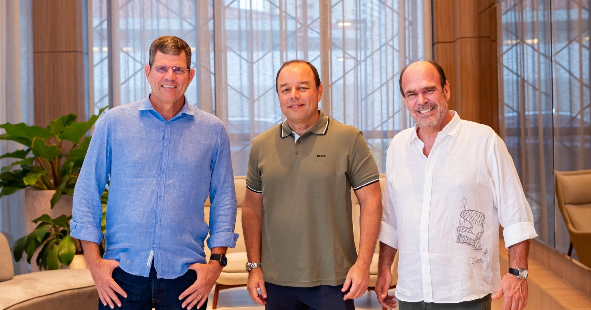
BN Hall
Sublime Horto House
A cobertura destaca o fornecimento de cortinas, persianas e tapetes pela Tríadee no residencial do Horto Florestal.
Ler publicação sobre Sublime Horto HouseReportagens, programas de rádio e publicações especializadas que documentam a participação da Tríadee em projetos de arquitetura, mostras e eventos do setor na Bahia.

BN Hall
A cobertura destaca o fornecimento de cortinas, persianas e tapetes pela Tríadee no residencial do Horto Florestal.
Ler publicação sobre Sublime Horto House
Yacht View
A revista apresenta a parceria da Tríadee com a Hunter Douglas no ambiente do Estúdio Par, que conta com persianas motorizadas e teto retrátil.
Ler publicação sobre Espaço Isla na CASACOR Bahia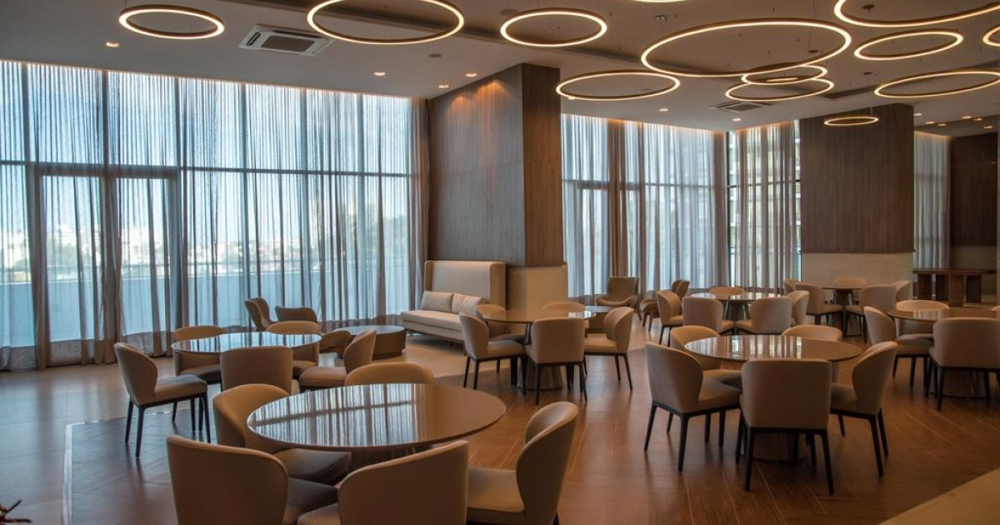
BN Hall
A reportagem reúne trabalhos da Tríadee para empreendimentos como Monvert, Fasano Salvador e Tivoli Ecoresort.
Ler publicação sobre Projetos residenciais e hoteleiros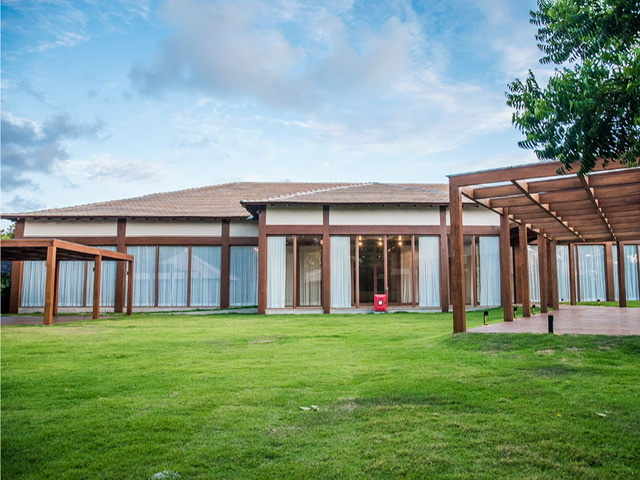
Alô Alô Bahia
A publicação mostra o projeto de Sidney Quintela e registra o fornecimento de cortinas e persianas pela Tríadee.
Ler publicação sobre Centro de convenções do Tivoli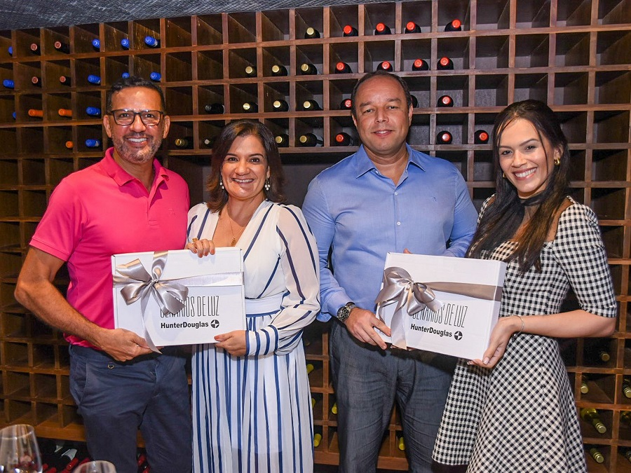
Alô Alô Bahia
A cobertura registra o encontro promovido por Léo e Fabíolla para celebrar a conquista de escritórios baianos de arquitetura.
Ler publicação sobre Prêmio Talent Club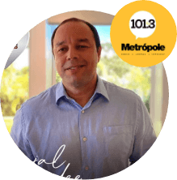
Rádio Metrópole FM 101,3
O site oficial da marca divulga um especial da Rádio Metrópole com Léo James, diretor da Tríadee.
Ver divulgação sobre Especial Tríadee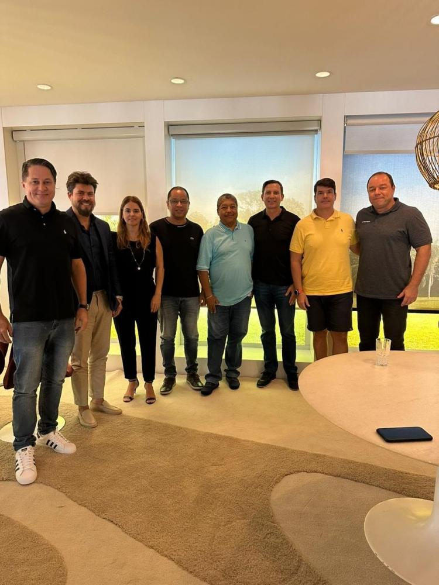
Rádio / Radar Imobiliário
A edição transmitida da Alameda das Espatódeas tratou de reformas de alto padrão e do Prêmio Ademi.
Consultar publicação sobre Programa ao vivo na loja da TríadeePortal / Let’s Go Bahia
A reportagem registra o apoio da Tríadee à prévia da mostra de residências de praia promovida pela Prima Empreendimentos.
Consultar publicação sobre Mostra de decoração em Baixio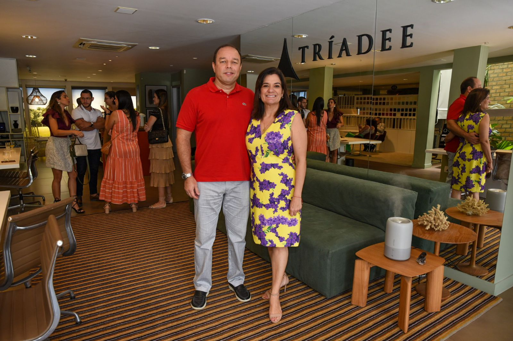
Portal / Alô Alô Bahia
A cobertura acompanha a ampliação da loja Tríadee e a abertura de um espaço dedicado aos tapetes da fabricante em Salvador.
Consultar publicação sobre Abertura do espaço da Cia das Fibras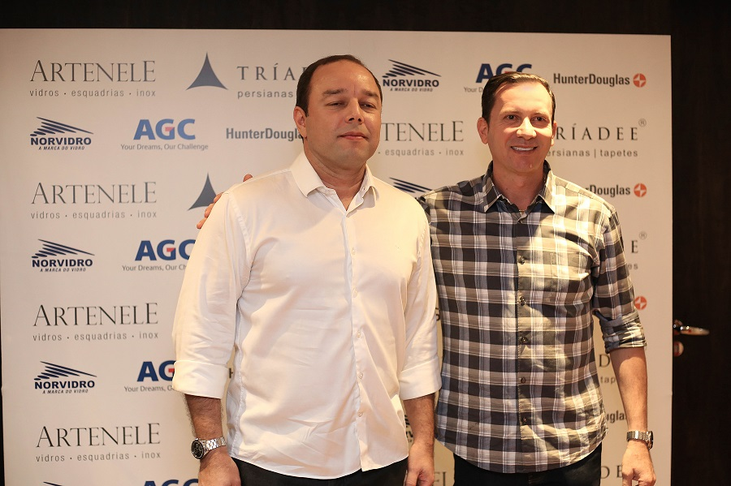
Portal / Alô Alô Bahia
A galeria registra o encontro promovido pela Tríadee e pela Artenele para profissionais de arquitetura e interiores.
Consultar publicação sobre Encontro com arquitetos no Fasano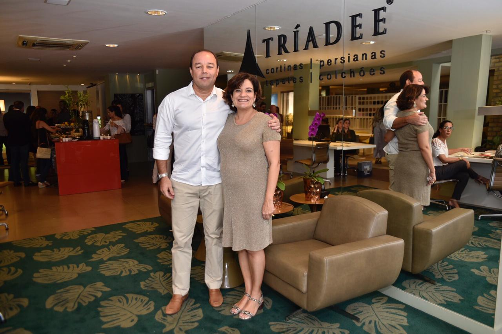
Portal / Alô Alô Bahia
A publicação documenta a abertura do espaço da Sealy na loja da Tríadee e a visita de arquitetos e designers.
Consultar publicação sobre Inauguração do espaço Sealy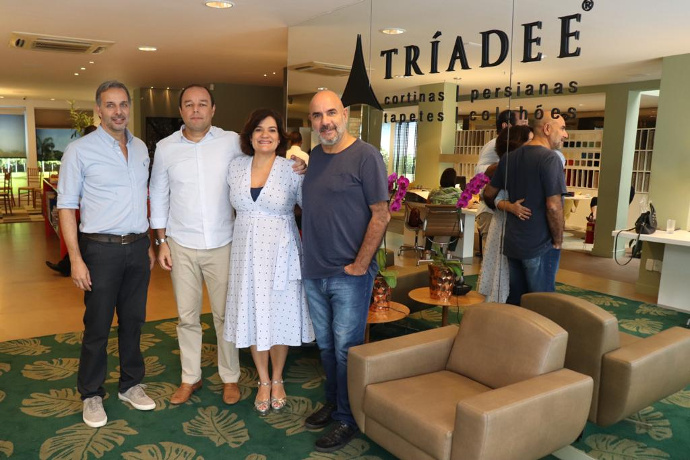
Portal / Alô Alô Bahia
A cobertura registra a apresentação de tapetes da Cia das Fibras e a demonstração de um tear manual na loja.
Consultar publicação sobre Demonstração de tecelagem artesanal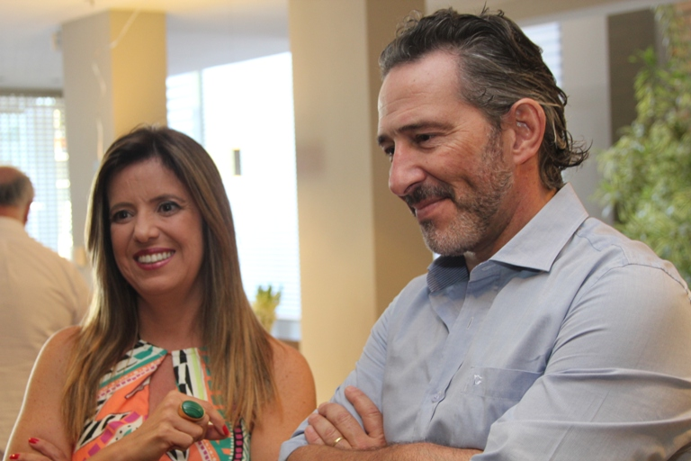
Portal / Alô Alô Bahia
O registro fotográfico acompanha a apresentação da coleção de tapetes e carpetes na Tríadee.
Consultar publicação sobre Apresentação dos tapetes Santa Mônica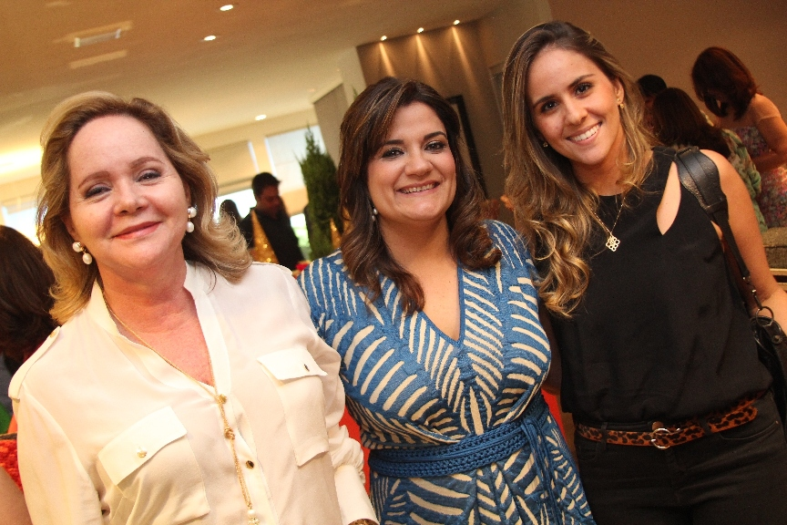
Portal / Alô Alô Bahia
A galeria registra a inauguração oficial da loja e a presença de profissionais do setor em Salvador.
Consultar publicação sobre Inauguração da loja nas Espatódeas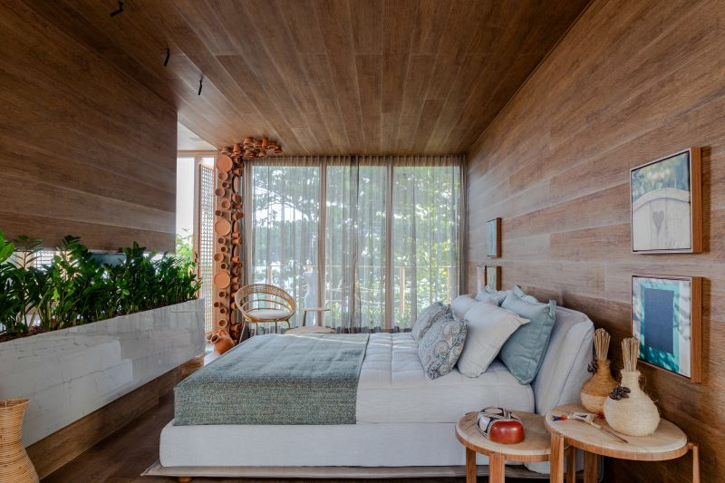
Publicação especializada / CASACOR Bahia
O anuário de 2024 credita a Tríadee entre as marcas que colaboraram no ambiente assinado por Bruna Oliveira.
Consultar publicação sobre Loft EvvivaPublicação especializada / Hunter Douglas
O livro Cenários de Luz apresenta o espaço da marca na mostra e documenta sua composição com cortinas e painéis de madeira.
Consultar publicação sobre Espaço Tríadee na CASACOR Bahia